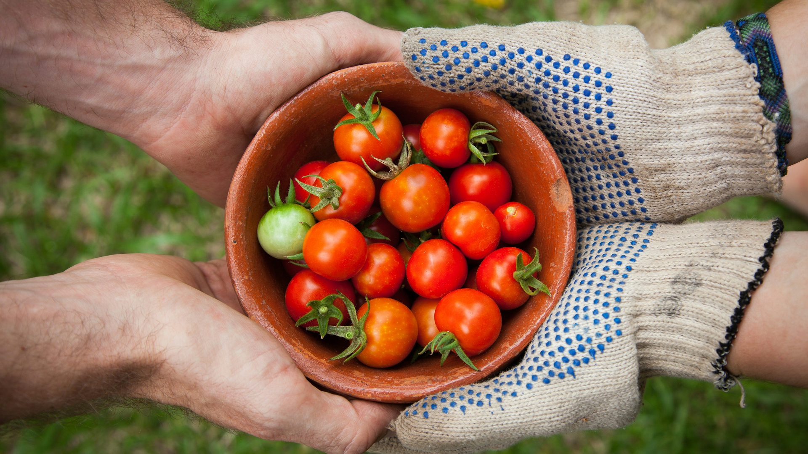

농부의 손에서 여러분의 식탁까지
우리가 직접 찾아간 47곳의 산지 파트너

산지와 함께하는 산지직송
산지직송은 전국 47곳의 농가·어가·축산 파트너와 직거래 계약을 맺고 있습니다. 중간 유통을 줄이고, 수확 직후의 신선도를 그대로 담기 위해 매 시즌 현장을 방문하며 품질 기준을 함께 정합니다.
토양과 기후에 맞는 품목을 재배하는 농부의 이야기를 기록하고, 어떤 날 수확했는지·어떤 방식으로 포장했는지 투명하게 알려 드립니다. 여러분의 식탁에 오르는 한 알, 한 포기가 누구의 손을 거쳐 왔는지 믿고 선택하실 수 있도록 끊임없이 산지를 찾아가겠습니다.
신규 파트너 농가는 지역 축제와 산지 방문 프로그램을 통해 소개됩니다. 구독 회원께는 방문 체험 초대가 순차적으로 안내됩니다.